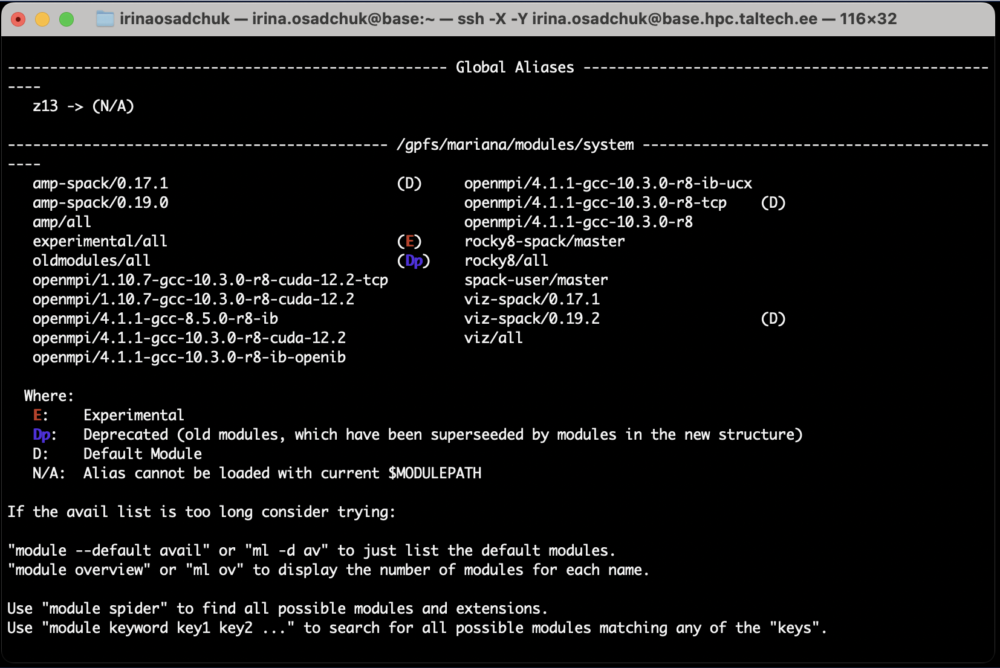
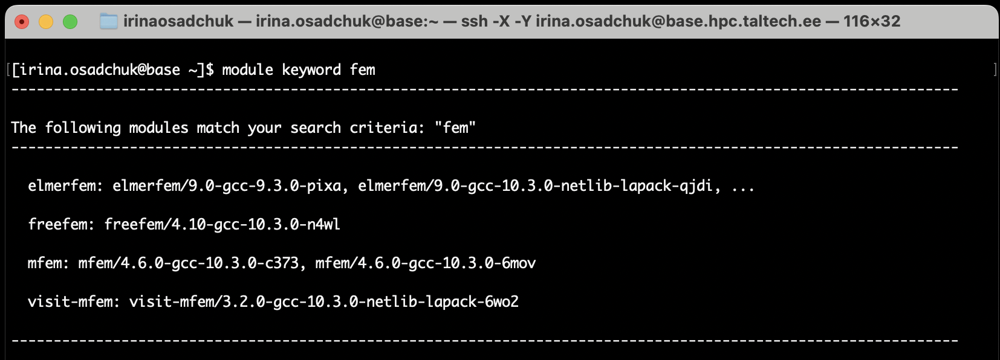
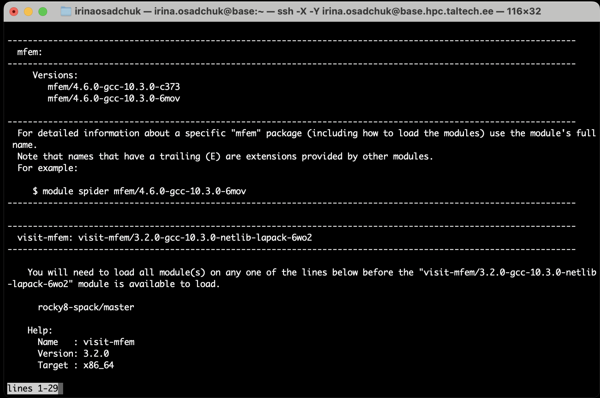
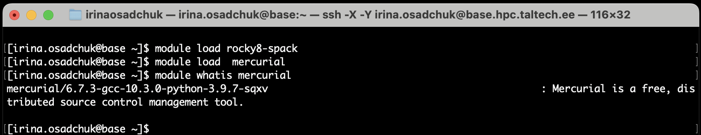
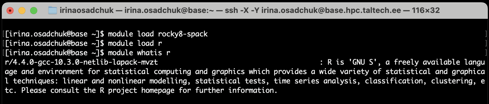

Module environment (lmod)
Short introduction
HPC has a module step-system. To use some application, user needs to follow these two steps, and insert applications into the search path:
Determine the machine type (eg. amp or green) by command:
module load rocky8-spack # for most free programs (SPACK package manager)
or
module load rocky8/all # for licensed programs and some free (non-SPACK managed)
Load program needed:
module load tau
The list of avalible modules can be looked by:
module avail
where:
Lic - a license is required, see user-guide for more information
Uni - commercial software with site licence, number of concurrent processes may be limited
Reg - registration required, see user-guide for more information
L - module is loaded
Dp - deprecated (old modules, which have been superseeded by modules in the new structure)
O - obsolete (module moved or superseeded by SPACK module)
Exp - Experimental module, used while testing software installation, module name may change or software may be deleted
D - default Module.
Long version
The module system is used to manage settings for different applications. Many applications and libraries are not in the standard search path, this way it is possible to install two different versions of the same software/library that would otherwise create conflicts. The module system is used to insert applications into the search path (or remove them from it) on a per user and per occasion basis.
Useful commands
All available modules can be looked through by command:
module avail
example output:

modules are grouped in a hierarchy, there may be several versions of the same software installed, e.g. of the MPI library. Only one of these can be loaded at a single time. The default module of a group is marked by the
(D), if there is only one module in a group this is the default (unmarked).To load a certain version of a module/program (here - Open MPI 4.1.1-gcc-8.5.0-r8-ib):
module load openmpi/4.1.1-gcc-8.5.0-r8-ib
To load the default module/program marked
(D)(here - Open MPI 4.1.1-gcc-10.3.0-r8-tcp):module load openmpi/
To list all loaded modules
module list
Unloading a module (here - Cuda 11.3.1-gcc-10.3.0-ehi3):
module unload cuda/11.3.1-gcc-10.3.0-ehi3
Finding a module containing a certain part (here - fem):
module keyword fem
Will be listed all modules that have “fem” in the description:

To find out more about a specific module (here - mfem):
module spider mfem
gives

The
module whatiscommand gives you a short explanation what the software is about, e.g.
or

Files .modulerc.lua and .bashrc
Personal preferences and resources can be specified in the files .modulerc.lua and .bashrc in the user’s $HOME directory. For example, it is possible to add a path for own module files for software installed by the user in the user’s $HOME directory,
automatically load some modules on login and to define one’s own “default” modules using the entry “module_version(”r/4.1.1-gcc-10.3.0-zwgc”,”default”)” or introduce abbreviations using an entry like “module_alias(”z13”, “r/4.1.1-gcc-10.3.0-zwgc”)” to define a module alias “z13”.
examplele of .modulerc.lua file
module_version("r/4.1.1-gcc-10.3.0-zwgc","default")
module_alias("z13","r/4.1.1-gcc-10.3.0-zwgc")
module_version("p/20.2-gcc-10.3.0-python-2.7.18-ij2m","default")
module_alias("p20","p/20.2-gcc-10.3.0-python-2.7.18-ij2m")
examplele of .bashrc file
# .bashrc
# Source global definitions
if [ -f /etc/bashrc ]; then
. /etc/bashrc
fi
# Uncomment the following line if you don't like systemctl's auto-paging feature:
# export SYSTEMD_PAGER=
# User specific aliases and functions
module load rocky8-spack
module load r/4.1.1-gcc-10.3.0-zwgc
Module groups
We moved to a new module structure! Modules from `/share/apps/modules` are being retired. Software is compiled for `x86-64` and will run o all nodes (no special optimization). Optimized versions for some software for specific nodes may follow later (or not).
New modules are grouped, you can activate them by loading one or more of the following modules:
| modulegroup | description |
|---|---|
| rocky8/all | manually installed software |
| rocky8-spack | software installed with spack package manager |
Modules used on viz
In order to make the module system work on viz, the following needs to be added to your $HOME/.bashrc
if [[ $(hostname -s) = viz ]]; then
source /usr/share/lmod/6.6/init/bash
module use /gpfs/mariana/modules/system
fi
Further access to viz and load modules needed. For example:
ssh -X -A -J UNI-ID@base.hpc.taltech.ee UNI-ID@viz.hpc.taltech.ee
module load viz-spack
module load jmol
More about use of viz can be found at visualization page.
Available modules
Currently the following modules are available, this serves as an example, please note that the list on this page will be updated very seldom, use module avail after login to get an up-to-date list of the availabe modules.
Click to expand
---------------------- /gpfs/mariana/modules/rocky8/all -----------------------
abaqus/2018 (Uni)
abaqus/2021 (Uni,D)
abcl/1.9.2
ansys-autodyn/23.2 (Lic,E)
ansys-fluids/23.2
gaussian/09
gaussian/16.c01
gaussian/16.c02
gaussian/16 (D)
gaussview/6.1
lsdyna/intel-mpp-13.0.0-d (Lic)
lsdyna/intel-mpp-13.0.0-s (Lic)
lsdyna/smp-13.0.0-d (Lic)
lsdyna/smp-13.0.0-s (Lic,D)
matlab/2014b (Uni)
matlab/2018a (Uni)
matlab/2021b (Uni)
matlab/2022b (Uni)
matlab/2023b (Uni,D)
orca/4.1.2-lic
orca/4.1.2
orca/5.0.4 (D)
sbcl/2.2.2 (L)
star-ccm+/15.06.007-r8 (Lic)
star-ccm+/15.06.008-r8 (Lic)
star-ccm+/16.04.007-r8
star-ccm+/16.04.012-r8 (Lic)
star-ccm+/17.02.008-r8 (Lic)
star-ccm+/17.04.008-r8-cad-nx-con (Lic)
star-ccm+/17.04.008-r8 (Lic)
star-ccm+/17.06.007-r8 (Lic)
star-ccm+/18.04.008-r8 (Lic)
star-ccm+/18.04.009-r8 (Lic,D)
stda/1.6.3
vmd/1.9.3-text (Reg,L)
----------------- /gpfs/mariana/modules/rocky8/rocky8-x86_64 ------------------
bcftools/1.19-gcc-10.3.0-openblas-2nph
bioawk/1.0-gcc-10.3.0-xzhf
chapel/1.24.1-gcc-10.3.0-kryx
cmake/3.29.2-gcc-10.3.0-jsyg
cuda/11.3.1-gcc-10.3.0-ehi3
cuda/12.2.2-gcc-10.3.0-5rec (D)
curl/8.7.1-gcc-10.3.0-xdf5 (L)
elmerfem/9.0-gcc-10.3.0-4uqn
fastqc/0.12.1-gcc-10.3.0-56yh
fftw/3.3.10-gcc-10.3.0-ccxe
freefem/4.10-gcc-10.3.0-n4wl
gawk/5.3.0-gcc-8.5.0-a7a3
gcc/10.3.0-gcc-8.5.0-abqv (L)
git/2.45.1-gcc-10.3.0-5xxc
glib/2.78.3-gcc-10.3.0-on3e
gnuplot/6.0.0-gcc-10.3.0-lysd
gperf/3.1-gcc-10.3.0-ogys
gromacs/2024.2-gcc-10.3.0-gqvn
hdf5/1.14.3-gcc-10.3.0-pkxk
hypre/2.31.0-gcc-10.3.0-kpoh
jmol/14.31.0-gcc-10.3.0-wajs
julia/1.10.2-gcc-10.3.0-openblas-a6d4
libcatalyst/2.0.0-gcc-10.3.0-openblas-vpu7
libfabric/1.18.0-gcc-10.3.0-qtmt
lmod/8.7.37-gcc-10.3.0-nprc
mawk/1.3.4-20240123-gcc-10.3.0-dw6a
mercurial/6.7.3-gcc-10.3.0-python-3.9.7-sqxv
mfem/4.6.0-gcc-10.3.0-c373
mfem/4.6.0-gcc-10.3.0-6mov (D)
miniconda3/24.3.0-gcc-10.3.0-343s
molden/6.7-gcc-10.3.0-5ln6
netcdf-c/4.9.2-gcc-10.3.0-ergk
netcdf-fortran/4.6.1-gcc-10.3.0-24g7
netlib-lapack/3.11.0-gcc-10.3.0-5j7d
netlib-scalapack/2.2.0-gcc-10.3.0-nvhpc-openmpi-frty
nvhpc/22.9-gcc-10.3.0-c6t2
nvtop/3.0.1-gcc-10.3.0-pure
nvtop/3.0.1-gcc-10.3.0-v7ne
nvtop/3.0.1-gcc-10.3.0-zq2a (D)
nwchem/7.2.2-gcc-10.3.0-netlib-lapack-klio
octave-symbolic/2.9.0-gcc-10.3.0-netlib-lapack-24iy
octave/9.1.0-gcc-10.3.0-netlib-lapack-tjlh
openblas/0.3.26-gcc-10.3.0-khv7 (L)
openfoam-org/5.0-gcc-10.3.0-sblp
openfoam-org/10-gcc-10.3.0-jhub (D)
openfoam/1912_220610-gcc-10.3.0-j6wc
openfoam/2106_220610-gcc-10.3.0-2jnl
openfoam/2312-gcc-10.3.0-gclj (L,D)
openrasmol/2.7.5.2-gcc-10.3.0-rnlx
paraview/5.9.1-gcc-10.3.0-openblas-464b (L)
petsc/3.21.1-gcc-10.3.0-netlib-lapack-lqid
picard/3.1.1-gcc-10.3.0-madg
py-anyio/3.6.2-gcc-10.3.0-python-3.9.7-bugc
py-argon2-cffi-bindings/21.2.0-gcc-10.3.0-python-3.9.7-ir5u
py-argon2-cffi/21.3.0-gcc-10.3.0-python-3.9.7-e3q4
py-asttokens/2.4.0-gcc-10.3.0-python-3.9.7-7l43
py-attrs/23.1.0-gcc-10.3.0-python-3.9.7-lytk
py-babel/2.12.1-gcc-10.3.0-python-3.9.7-6e4r
py-backcall/0.2.0-gcc-10.3.0-python-3.9.7-omya
py-beautifulsoup4/4.12.2-gcc-10.3.0-python-3.9.7-3mbk
py-bleach/6.0.0-gcc-10.3.0-python-3.9.7-jkow
py-certifi/2023.7.22-gcc-10.3.0-python-3.9.7-u4vk
py-cffi/1.15.1-gcc-10.3.0-python-3.9.7-njeq
py-charset-normalizer/3.3.0-gcc-10.3.0-python-3.9.7-ahmd
py-comm/0.1.4-gcc-10.3.0-python-3.9.7-tbis
py-contourpy/1.0.7-gcc-10.3.0-openblas-nf6f
py-cycler/0.11.0-gcc-10.3.0-python-3.9.7-5qo2
py-debugpy/1.6.7-gcc-10.3.0-python-3.9.7-ixy4
py-decorator/5.1.1-gcc-10.3.0-python-3.9.7-6o6k
py-defusedxml/0.7.1-gcc-10.3.0-python-3.9.7-etbf
py-executing/1.2.0-gcc-10.3.0-python-3.9.7-jb5a
py-fastjsonschema/2.16.3-gcc-10.3.0-python-3.9.7-2tkd
py-fonttools/4.39.4-gcc-10.3.0-python-3.9.7-zbrq
py-gevent/23.7.0-gcc-10.3.0-python-3.9.7-ywdo
py-greenlet/2.0.2-gcc-10.3.0-python-3.9.7-g3wh
py-idna/3.4-gcc-10.3.0-python-3.9.7-xfuj
py-importlib-metadata/7.0.1-gcc-10.3.0-python-3.9.7-phev
py-importlib-resources/5.12.0-gcc-10.3.0-python-3.9.7-zc5z
py-ipykernel/6.23.1-gcc-10.3.0-openblas-ejda
py-ipython-genutils/0.2.0-gcc-10.3.0-python-3.9.7-7tjr
py-ipython/8.14.0-gcc-10.3.0-openblas-cevj
py-jedi/0.18.2-gcc-10.3.0-python-3.9.7-owt3
py-jinja2/3.1.2-gcc-10.3.0-python-3.9.7-ejri
py-json5/0.9.14-gcc-10.3.0-python-3.9.7-setp
py-jsonschema/4.17.3-gcc-10.3.0-python-3.9.7-5bd3
py-jupyter-client/8.2.0-gcc-10.3.0-python-3.9.7-wexx
py-jupyter-core/5.3.0-gcc-10.3.0-python-3.9.7-wld5
py-jupyter-server/1.21.0-gcc-10.3.0-python-3.9.7-b25c
py-jupyterlab-pygments/0.2.2-gcc-10.3.0-python-3.9.7-kttz
py-jupyterlab-server/2.22.1-gcc-10.3.0-python-3.9.7-ryk3
py-jupyterlab/3.4.2-gcc-10.3.0-openblas-xsvk
py-kiwisolver/1.4.5-gcc-10.3.0-python-3.9.7-yygr
py-markupsafe/2.1.3-gcc-10.3.0-python-3.9.7-bpul
py-matplotlib-inline/0.1.6-gcc-10.3.0-openblas-o5z6
py-matplotlib/3.8.4-gcc-10.3.0-openblas-6vmn
py-mistune/2.0.5-gcc-10.3.0-python-3.9.7-eid7
py-nbclassic/0.4.8-gcc-10.3.0-openblas-zx6b
py-nbclient/0.8.0-gcc-10.3.0-python-3.9.7-b7xq
py-nbconvert/7.14.1-gcc-10.3.0-python-3.9.7-hxvg
py-nbconvert/7.14.1-gcc-10.3.0-python-3.9.7-y6ii (D)
py-nbformat/5.8.0-gcc-10.3.0-python-3.9.7-74ab
py-nest-asyncio/1.5.6-gcc-10.3.0-python-3.9.7-4hdc
py-notebook-shim/0.2.3-gcc-10.3.0-python-3.9.7-w5cs
py-numpy/1.21.6-gcc-10.3.0-openblas-kaao
py-packaging/23.1-gcc-10.3.0-python-3.9.7-bzma
py-pandocfilters/1.5.0-gcc-10.3.0-python-3.9.7-uitt
py-parso/0.8.3-gcc-10.3.0-python-3.9.7-qxxb
py-pexpect/4.8.0-gcc-10.3.0-python-3.9.7-wwkw
py-pickleshare/0.7.5-gcc-10.3.0-python-3.9.7-xyrl
py-pillow/10.3.0-gcc-10.3.0-python-3.9.7-spkd
py-pip/23.1.2-gcc-10.3.0-python-3.9.7-pmrk
py-platformdirs/3.10.0-gcc-10.3.0-python-3.9.7-7pms
py-prometheus-client/0.17.0-gcc-10.3.0-python-3.9.7-ajdv
py-prompt-toolkit/3.0.38-gcc-10.3.0-python-3.9.7-7733
py-psutil/5.9.5-gcc-10.3.0-python-3.9.7-bxii
py-ptyprocess/0.7.0-gcc-10.3.0-python-3.9.7-ubd4
py-pure-eval/0.2.2-gcc-10.3.0-python-3.9.7-7e7k
py-pybind11/2.12.0-gcc-10.3.0-python-3.9.7-yyzs
py-pycparser/2.21-gcc-10.3.0-python-3.9.7-l633
py-pygments/2.13.0-gcc-10.3.0-python-3.9.7-df5m
py-pyparsing/3.1.2-gcc-10.3.0-python-3.9.7-ojnc
py-pyrsistent/0.19.3-gcc-10.3.0-python-3.9.7-u6lp
py-python-dateutil/2.8.2-gcc-10.3.0-python-3.9.7-uc6q
py-pyzmq/25.0.2-gcc-10.3.0-python-3.9.7-vtzs
py-requests/2.31.0-gcc-10.3.0-python-3.9.7-evis
py-send2trash/1.8.0-gcc-10.3.0-python-3.9.7-bgvz
py-setuptools/59.4.0-gcc-10.3.0-python-3.9.7-mjeg
py-six/1.16.0-gcc-10.3.0-python-3.9.7-pz4t
py-sniffio/1.3.0-gcc-10.3.0-python-3.9.7-opfj
py-soupsieve/2.4.1-gcc-10.3.0-python-3.9.7-oanu
py-stack-data/0.6.2-gcc-10.3.0-python-3.9.7-nkn4
py-terminado/0.17.1-gcc-10.3.0-python-3.9.7-zfq4
py-tinycss2/1.2.1-gcc-10.3.0-python-3.9.7-ddln
py-tornado/6.3.3-gcc-10.3.0-python-3.9.7-c7p3
py-traitlets/5.9.0-gcc-10.3.0-python-3.9.7-r677
py-typing-extensions/4.8.0-gcc-10.3.0-python-3.9.7-ql62
py-urllib3/2.1.0-gcc-10.3.0-python-3.9.7-edpr
py-wcwidth/0.2.7-gcc-10.3.0-python-3.9.7-tcwk
py-webencodings/0.5.1-gcc-10.3.0-python-3.9.7-b533
py-websocket-client/1.6.3-gcc-10.3.0-python-3.9.7-5po6
py-zipp/3.17.0-gcc-10.3.0-python-3.9.7-5b4u
py-zope-event/4.6-gcc-10.3.0-python-3.9.7-ffgp
py-zope-interface/5.4.0-gcc-10.3.0-python-3.9.7-2q5a
python/3.9.7-gcc-10.3.0-kxnt (L)
qwt/6.1.6-gcc-10.3.0-vimf
r/4.4.0-gcc-10.3.0-netlib-lapack-mvzt
samtools/1.19.2-gcc-10.3.0-6l26
screen/4.9.1-gcc-10.3.0-rzjc
sortmerna/2017-07-13-gcc-10.3.0-3nqh
star/2.7.11b-gcc-10.3.0-26bs
su2/8.0.1-gcc-10.3.0-xdk6
tmux/3.4-gcc-10.3.0-5b7i
trimmomatic/0.39-gcc-10.3.0-qwqr
vcftools/0.1.16-gcc-10.3.0-r5ch
------------------------ /gpfs/mariana/modules/system -------------------------
amp-spack/0.17.1 (D)
amp-spack/0.19.0
amp/all
experimental/all
oldmodules/all (Dp)
openmpi/1.10.7-gcc-10.3.0-r8-cuda-12.2
openmpi/4.1.1-gcc-8.5.0-r8-ib
openmpi/4.1.1-gcc-9.3-amp
openmpi/4.1.1-gcc-9.3-amppmi
openmpi/4.1.1-gcc-9.3-amppmicuda11.4
openmpi/4.1.1-gcc-10.3.0-r8-cuda-12.2 (L)
openmpi/4.1.1-gcc-10.3.0-r8-ib-openib
openmpi/4.1.1-gcc-10.3.0-r8-ib-ucx
openmpi/4.1.1-gcc-10.3.0-r8-tcp
openmpi/4.1.1-gcc-10.3.0-r8 (D)
rocky8-spack/master (L)
rocky8/all
viz-spack/0.17.1
viz-spack/0.19.2 (D)
viz/all
By default SPACK builds optimized for the CPU the software is build on. The packages from the amp nodes will work on the green nodes but slower than the optimized modules. Conversely, the skylake-optimized modules will try to use hardware features not present on the green nodes, so the software will not run there.